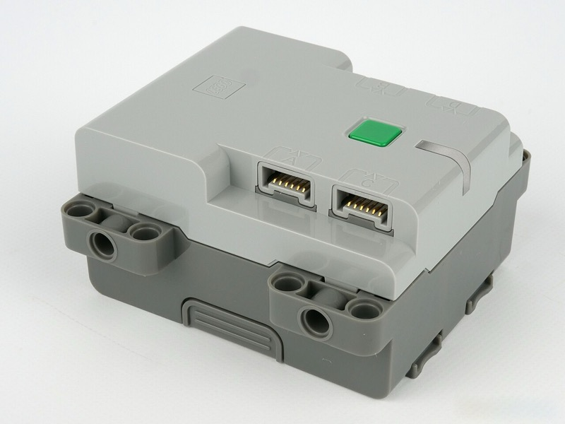
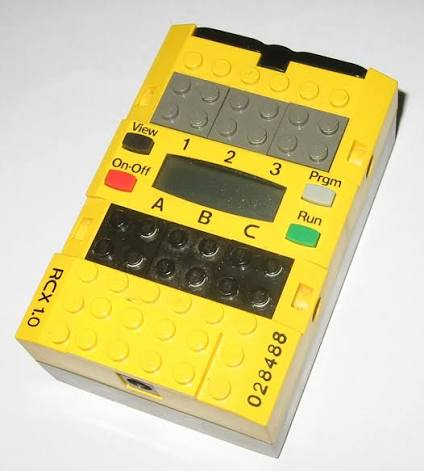
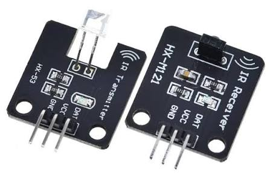
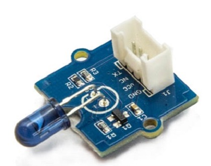
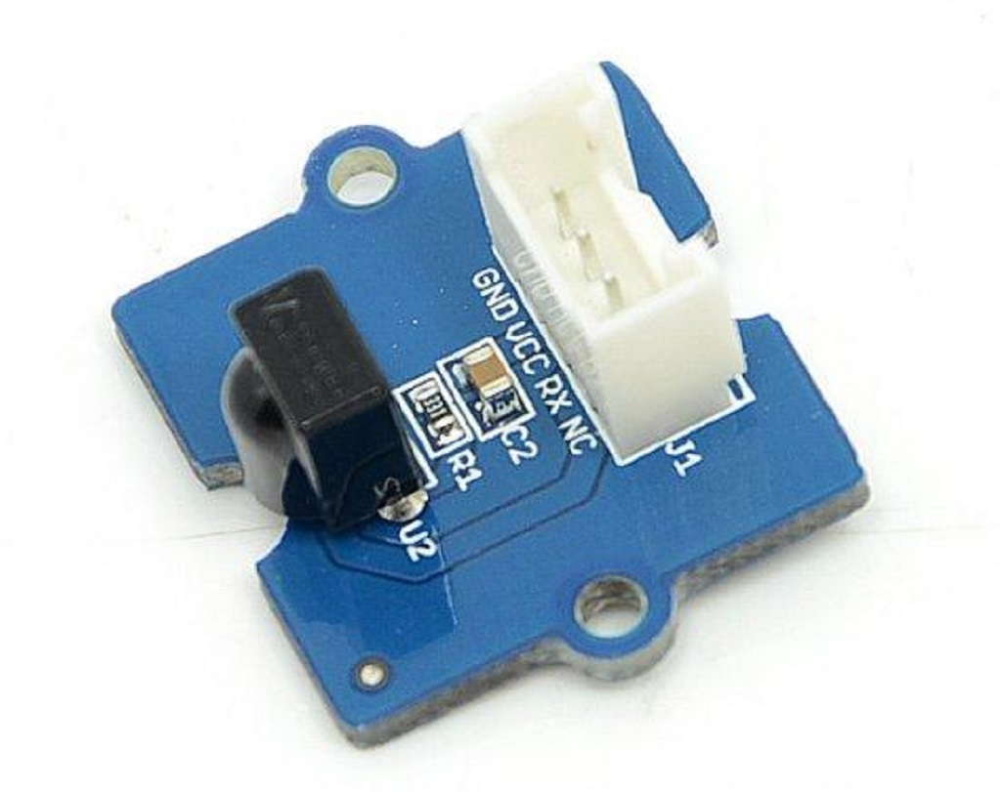

LEGO ecosystem
LEGO has made several generations of motorised, remote-controlled systems. Juno drives two of them today from the same kind of Java program, and three more are pending. Each is a small remote-control class: the board plays the part of LEGO's remote, app or infrared tower, and the LEGO hardware does the rest.
| System | Since | What it is | Protocol used | Board with support | Juno class |
|---|---|---|---|---|---|
| Powered Up | 2017 | Hubs (City, Technic, BOOST, DUPLO Train) with motors and sensors, driven by LEGO's apps | Bluetooth LE | UNO R4 WiFi, UNO Q | RemotePoweredUpHub |
| Mindstorms EV3 | 2013 | The third Mindstorms brick: four motor outputs, four sensor inputs, a screen and a speaker, running Linux | Bluetooth Classic (serial port profile), LEGO's EV3 direct commands | — | Pending |
| Power Functions | 2007 | Motors, lights and servos plugged into an IR Receiver (8884), normally driven by the IR remote (8885) | Infrared, through an IR LED on the board | — | Pending |
| Mindstorms NXT | 2006 | The second Mindstorms brick: three motor outputs, four sensor inputs, a screen and a speaker | Bluetooth Classic (serial port profile), LEGO's NXT direct commands | — | Pending |
| Mindstorms RCX | 1998 | The yellow programmable brick: three motor outputs, three sensor inputs, an LCD and a speaker | Infrared, through an IR LED and receiver on the board | UNO R4 WiFi, UNO Q, Nano ESP32 | RemoteRcx |
LEGO Powered Up
RemotePoweredUpHub
(io.github.jabrena.juno.remote.lego.poweredup) lets a Juno program remote-control a LEGO Powered Up hub — run
its motors and set its status LED — the same way the LEGO apps do. The board acts as a Bluetooth
Low Energy central and speaks the
LEGO Wireless Protocol 3.0 to the hub.
It is a compiler intrinsic backed by the Arduino ArduinoBLE library.

Connect to a hub
Create one RemotePoweredUpHub at startup, press the hub's green button so it advertises, and call connect. It
scans for the first hub it finds, for up to the given milliseconds (0 waits forever). The hub drops the link when it
switches off or goes out of range, so check isConnected() in long-running loops and connect again:
RemotePoweredUpHub hub = new RemotePoweredUpHub();
while (true) {
if (!hub.isConnected()) {
if (hub.connect(10_000)) {
Serial.print("connected to hub type ");
Serial.println(hub.hubType()); // TYPE_CITY_HUB, TYPE_TECHNIC_HUB, ...
}
}
Delay.millis(500);
}
PoweredUpHubHello is the smallest check that a hub connects: it prints the battery level and waits for the hub again if the link drops. Close the LEGO apps first: a hub accepts one
connection at a time.
Set the LED color
The hub's status LED takes a LEGO color index, from COLOR_OFF through COLOR_PINK, COLOR_BLUE, COLOR_GREEN,
COLOR_YELLOW, COLOR_RED to COLOR_WHITE:
int[] colors = {
HubColor.RED, HubColor.GREEN, HubColor.BLUE
};
while (hub.isConnected()) {
for (int color : colors) {
hub.setLedColor(color);
Delay.millis(1000);
}
}
PoweredUpHubHello connects and then cycles the LED through several colors.
Drive the motors
setMotorPower(port, percent) runs any Powered Up motor on PORT_A to PORT_D, from -100 (full reverse) to 100
(full forward). There are three ways to stop: setMotorPower(port, 0) lets the motor coast, brakeMotor stops it
actively, and holdMotor holds a motor with a rotation sensor in place. portDevice(port) tells which motor the hub
detected on a port:
if (hub.portDevice(HubPort.A) != RemotePoweredUpHub.DEVICE_NONE) {
hub.getMotor(HubPort.A).drive(50); // half speed forward
Delay.millis(2000);
hub.getMotor(HubPort.A).drive(-50); // half speed backward
Delay.millis(2000);
hub.getMotor(HubPort.A).stop();
}
MagicSquarePoweredUpHub drives a two-motor vehicle (ports A and B) around a square. To drive two motors as one, as a vehicle's left and
right wheels, pair them with linkMotors(PORT_A, PORT_B) and drive the pair with setLinkedMotorPower.
Lego mindstorms RCX
RemoteRcx (io.github.jabrena.juno.remote.lego.rcx) lets a Juno program remote-control a LEGO
Mindstorms RCX brick over infrared: run its motors, read its sensors and buttons, play sounds and read its batteries.
It follows LeJOS's RemoteNXT: one object for the brick, whose getters hand out its parts, all allocated once when
the RemoteRcx is created. The board needs an IR receiver module and an IR LED, here on pins 2 and 3, pointed at the
brick's infrared window. The motors, sensors, sounds and battery work with LEGO's own firmware; reading the
buttons and writing text on the display need Juno's RCX firmware, downloaded to the brick once with
RcxFirmwareDownload. The Nano ESP32 page shows the same
setup with Grove infrared modules.

Installing the JUno firmware to lego mindstorms RCX
Download Juno's firmware to the brick once. Wire the IR receiver to pin 2 and the IR LED to pin 3, point both at the switched-on RCX from 10 to 50 cm, and keep them still for about ten minutes; the serial monitor shows the progress:
./mvnw -f juno-examples/pom.xml compile juno:upload \
-Djuno.main=io.github.jabrena.juno.api.remote.lego.rcx.RcxFirmwareDownload \
-Djuno.board=arduino-uno-r4-wifi
./mvnw -f juno-examples/pom.xml juno:monitor -Djuno.board=arduino-uno-r4-wifi
On a Nano ESP32 with the Nano Connector Carrier, put a Grove infrared emitter in the A0/A1 socket and a Grove infrared receiver on the I2C socket's SCL line, and run the carrier version instead:
./mvnw -f juno-examples/pom.xml compile juno:upload \
-Djuno.main=io.github.jabrena.juno.api.remote.lego.rcx.NanoCarrierRcxFirmwareDownload \
-Djuno.board=arduino-nano-esp32
./mvnw -f juno-examples/pom.xml juno:monitor -Djuno.board=arduino-nano-esp32
Connecting with the brick
A brick that already runs firmware is left alone, so resetting the board afterwards cannot delete it.
A program reaches the brick through an infrared receiver and emitter pair, either HX modules wired to plain pins or
Grove modules plugged into Grove sockets. Create the RemoteRcx once, at startup, and call begin().
HX infrared modules
With an HX-M121 receiver and an HX-53 emitter, here on pins 2 and 3 of an UNO board:

HXM121InfraredReceiver receiver = new HXM121InfraredReceiver(Gpio.getD2()); // DAT on D2
HX53InfraredEmitter emitter = new HX53InfraredEmitter(Gpio.getD3()); // DAT on D3
RemoteRcx rcx = new RemoteRcx(new RcxLink(), receiver, emitter);
rcx.begin();
Grove infrared modules
With Grove infrared modules on a Nano ESP32's Nano Connector Carrier, the emitter in the A0/A1 socket and the receiver on the I2C socket's SCL line, passing the Nano's clock:


NanoConnectorCarrier carrier = new NanoConnectorCarrier();
GroveInfraredEmitter emitter = new GroveInfraredEmitter(carrier.getGroveA0());
GroveInfraredReceiver receiver = new GroveInfraredReceiver(carrier.getI2cScl());
RemoteRcx rcx = new RemoteRcx(new RcxLink(ArduinoNano.getClock()), receiver, emitter, ArduinoNano.getClock());
rcx.begin();
Either way, the examples below use the same rcx.
Use the motors
The brick has three motor outputs, getMotorA(), getMotorB() and getMotorC(); and combines two into one, as a
vehicle's left and right wheels. drive(speed) runs them from -RcxMotor.MAX_LEVEL (full reverse) to MAX_LEVEL
(7, full forward). stop() brakes them and flt() lets them coast:
RcxMotor wheels = rcx.getMotorA().and(rcx.getMotorC());
wheels.drive(RcxMotor.MAX_LEVEL); // forward
Delay.millis(2000);
wheels.drive(-RcxMotor.MAX_LEVEL); // backward
Delay.millis(2000);
wheels.stop();
RcxDriveAC drives a vehicle with its motors on outputs A and C.
Use the rotation sensor
A rotation sensor counts 16 steps per turn of its axle, signed by direction. Plug it into one of the brick's three
inputs, getSensor1() to getSensor3(), and call begin() after rcx.begin(); reset() sets the count back to zero:
RcxRotationSensor rotation = new RcxRotationSensor(rcx.getSensor1());
rotation.begin();
rotation.reset();
while (true) {
Serial.print(rotation.steps()); // 16 per turn
Serial.print(" steps, ");
Serial.print(rotation.degrees()); // 22.5 per step
Serial.println(" degrees");
Delay.millis(200);
}
RcxRotationSensorExample prints the steps and the angle each time the axle turns.
Use the touch sensor
isPressed() tells whether the touch sensor's button is down:
RcxTouchSensor touch = new RcxTouchSensor(rcx.getSensor1());
touch.begin();
while (!touch.isPressed()) {
Delay.millis(50);
}
Serial.println("Pressed");
RcxTouchSensorExample prints Pressed or Released each time it changes.
Use the temperature sensor
temperatureTenths() returns the temperature in tenths of a degree Celsius, so 235 is 23.5 °C:
RcxTemperatureSensor temperature = new RcxTemperatureSensor(rcx.getSensor1());
temperature.begin();
int tenths = temperature.temperatureTenths();
Serial.print(tenths / 10);
Serial.print(".");
Serial.print(tenths % 10);
Serial.println(" C");
RcxTemperatureSensorExample prints the temperature once a second.
Use the light sensor
lightPercent() returns the light level from 0 to 100, or -1 if the brick did not answer:
RcxLightSensor light = new RcxLightSensor(rcx.getSensor1());
light.begin();
int percent = light.lightPercent();
if (percent >= 0) {
Serial.print(percent);
Serial.println(" %");
}
RcxLightSensorExample prints the light level twice a second.
Play music
The brick's speaker plays one of six built-in sounds (RcxAudio.SOUND_BEEP, SOUND_SWEEP_UP, ...) or a tone of a
given frequency, from about 31 to 20000 Hz, for a duration in hundredths of a second. A tone replaces any sound
still playing, so wait for it to end before the next:
RcxAudio audio = rcx.getAudio();
audio.playSound(RcxAudio.SOUND_BEEP);
Delay.millis(500);
int[] notes = {262, 294, 330, 349, 392}; // C, D, E, F, G
for (int note : notes) {
audio.playTone(note, 30); // 0.3 seconds
Delay.millis(350);
}
RcxFurElise plays the melody of Beethoven's "Für Elise" on the brick.
Read the battery
getBattery().millivolts() asks the brick for its battery voltage. A negative value means the brick did not answer:
it is off, out of range, or not facing the IR LED. That makes it a good first check that the link works:
int millivolts = rcx.getBattery().millivolts();
if (millivolts < 0) {
Serial.println("No answer from the RCX");
} else {
Serial.print(millivolts);
Serial.println(" mV");
}
RcxPing reads the battery in a loop and reports whether the brick answers.
Read the buttons
With Juno's firmware, clicking View, Prgm or Run changes nothing on the brick: it remembers the click, and
getButtons().clicked() returns the buttons clicked since the previous call as a mask of RcxButtons.VIEW, PRGM
and RUN. The program decides what the display shows: getLcd().showText(...) writes up to four characters on the
digits, and getLcd().clear() blanks them:
rcx.getLcd().clear();
while (true) {
int clicked = rcx.getButtons().clicked();
if ((clicked & RcxButtons.RUN) != 0) {
rcx.getLcd().showText("RUN");
}
Delay.millis(200);
}